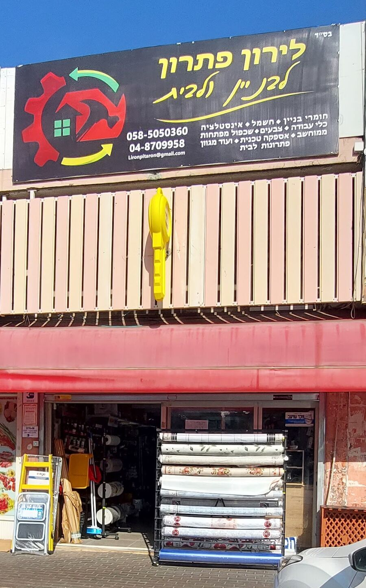
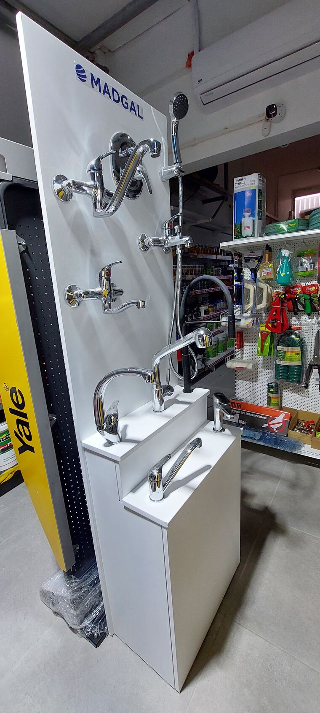
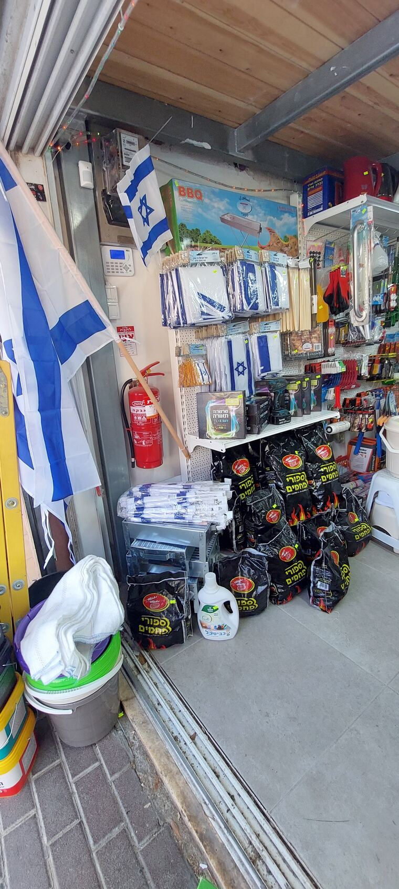
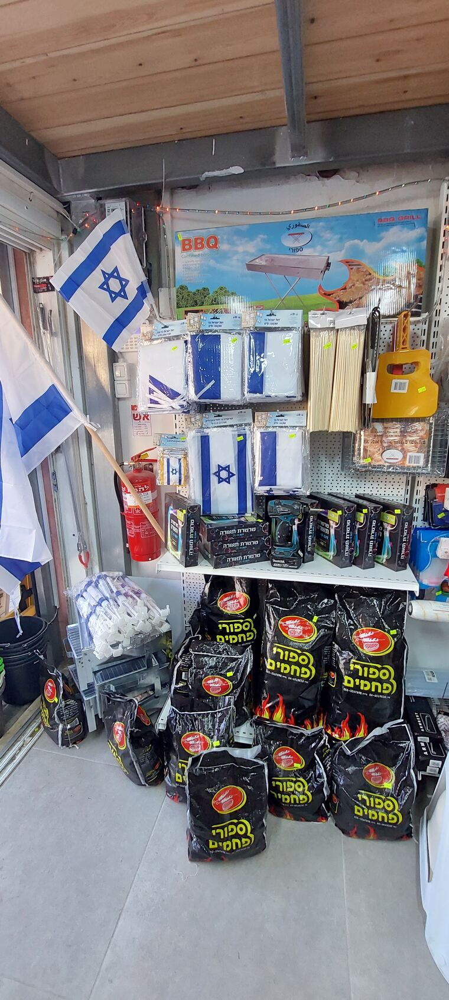
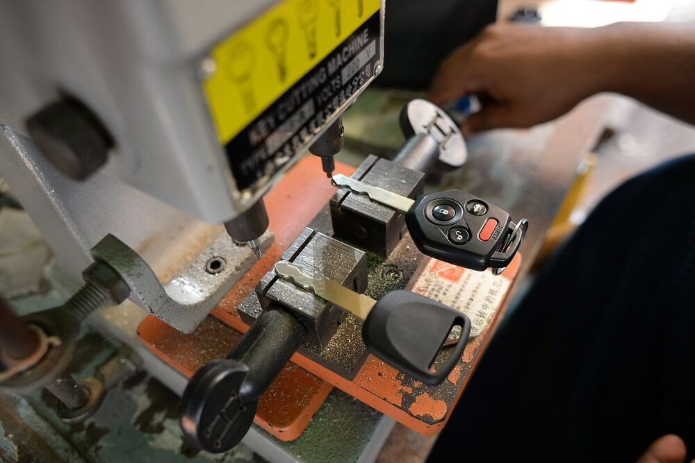
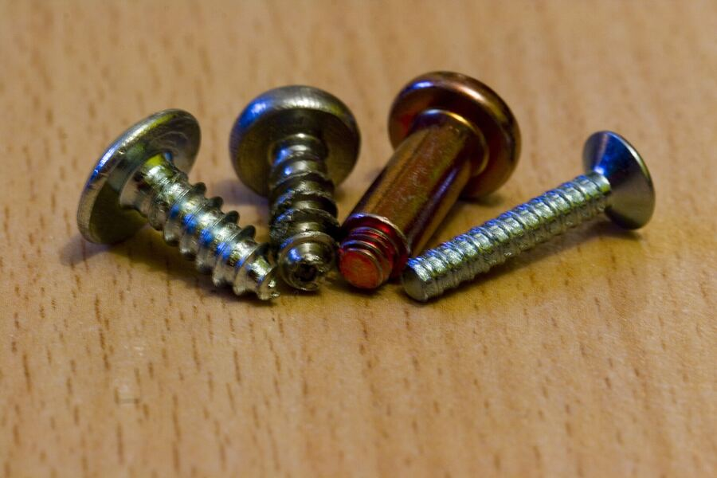

אינסטלציהברזים, מקלחונים וצנרתTaps, showers and pipes
לירון פתרוןLiron Pitaron לבניין ולביתfor building & home
חומרי בניין, חשמל, אינסטלציה, צבעים, כלי עבודה ושכפול מפתחות ממוחשב. ז'בוטינסקי 61, קריית מוצקין.Building supplies, electrical, plumbing, paint, tools and computerised key cutting. 61 Jabotinsky St, Kiryat Motzkin.




מדף אחרי מדף.Shelf after shelf.
חומרי בניין, חשמל, אינסטלציה, צבעים וכלי עבודה, בחנות אחת בשכונה.Building supplies, electrical, plumbing, paint and tools, in one neighbourhood shop.
חשמלנורות, שקעים, מפסקיםBulbs, sockets, switches
צבעיםצבע, מברשות ורולריםPaint, brushes and rollers
כלי עבודהידניים וחשמלייםHand and power tools

תמונה להמחשהIllustrative photoשכפול מפתחות ממוחשבושירותי מנעולנותand locksmith services

תמונה להמחשהIllustrative photoאספקה טכניתברגים, דיבלים, דבקים וסיליקוןScrews, anchors, glue and sealant
ועוד מגווןמנגלים, פחמים ודגליםGrills, charcoal and flags
באים להתייעץ.Come in and ask.
מביאים את החלק הישן, מספרים מה קרה בבית, וחושבים יחד עם לירון על הפתרון.Bring the old part, tell Liron what happened at home, and work out the fix together.
״הוא תמיד יודע לתת את הפתרון הנכון והמדויק שחוסך הרבה כסף וזמן יקר, בלי לנסות 'לדחוף' מוצרים מיותרים.״
“He always knows the right, precise solution that saves a lot of money and precious time, without trying to ‘push’ unnecessary products.”
דירוג בגוגלGoogle rating
ביקורותreviews
ז'בוטינסקיJabotinsky St
רשימה ללירון.A list for Liron.
פותחים מגירה לכל מה שצריך, וההודעה בוואטסאפ נכתבת מעצמה.Pull a drawer for each thing you need, and the WhatsApp message writes itself.
- פותחים מגירותPull the drawersמה שצריך לבית, בלי לחפש מילים.What the house needs, no wording needed.
- שולחים ללירוןSend it to Lironההודעה נפתחת בוואטסאפ, מוכנה לשליחה.The message opens in WhatsApp, ready to send.
- קופצים לחנותDrop by the shopז'בוטינסקי 61, קריית מוצקין.61 Jabotinsky St, Kiryat Motzkin.
מה כתבו הלקוחות.What customers wrote.
4.9 בגוגל, מתוך 267 ביקורות.4.9 on Google, from 267 reviews.
לירון פתרון · ז'בוטינסקי 61Liron Pitaron · 61 Jabotinsky
לירון עצמו הוא איש נדיר, סובלני ואדיב, שנותן מענה מקצועי לכל בעיה – מהקטנה ביותר ועד לפרויקטים מורכבים יותר בבית.
Liron himself is a rare person, patient and kind, who gives a professional answer to every problem – from the smallest to more complex projects at home.
לירון פתרון · ז'בוטינסקי 61Liron Pitaron · 61 Jabotinsky
לירון התותח נתן לי שייבות, מגנטים מחוזקים ושפורפרת RTV לבן ומעולה. פתר לי בשניה את הבעיה איתה התמודדתי. שירות מעולה, מקצועי ועם חיוך.
Liron, the champ, gave me washers, strong magnets and a tube of excellent white RTV. He solved the problem I was dealing with in a second. Excellent, professional service with a smile.
לירון פתרון · ז'בוטינסקי 61Liron Pitaron · 61 Jabotinsky
מקום נקי ומסודר, מרווח ומזמין. מתן השירות תמיד עם חיוך, עם סבלנות ועם הרבה תשומת לב ללקוח! … הסברים מקצועיים לפני ביצוע הפעולה והכל בנועם.
A clean, tidy place, spacious and inviting. Service always with a smile, with patience and a lot of attention to the customer! … Professional explanations before doing anything, and all of it pleasantly.
לירון פתרון · ז'בוטינסקי 61Liron Pitaron · 61 Jabotinsky
בחור מקצועי כנה ואדיב מאוד, באמת שירות לא רק 10/10 שירות שהוא 100/10 … רואים שהבן אדם עובד מהלב.
A professional, honest and very kind guy; truly not just 10/10 service but 100/10 … you can see the man works from the heart.
לירון פתרון · ז'בוטינסקי 61Liron Pitaron · 61 Jabotinsky
יש לכם את הפתרון מתחת לבית!!! אתם תצאו עם חיוך!!! אני עכשיו הכרתי והתלהבתי בטירוף, הבנאדם רוצה שללקוח יהיה הכי טוב.
You’ve got the solution right downstairs!!! You’ll leave with a smile!!! I just discovered it and I’m thrilled; the man wants the very best for the customer.
שאלות על הדלפק.Questions at the counter.
מה יש בחנות?What does the shop carry?
לפי השלט: חומרי בניין, חשמל, אינסטלציה, כלי עבודה, צבעים, שכפול מפתחות ממוחשב, אספקה טכנית ועוד מגוון פתרונות לבית.As the sign says: building supplies, electrical, plumbing, tools, paint, computerised key cutting, technical supplies and many more solutions for the home.
יש שכפול מפתחות?Do you cut keys?
כן, שכפול מפתחות ממוחשב. לקוחות מספרים גם על שירותי מנעולנות.Yes, computerised key cutting. Customers also mention locksmith services.
אפשר לבוא רק להתייעץ?Can I come in just to ask?
אחד הלקוחות כתב: ״זה פשוט כיף שיש מקום כזה קרוב לבית, שאפשר להיכנס אליו גם סתם כדי להתייעץ״ (אליק פיזם, בגוגל).One customer wrote: “It’s simply great to have a place like this near home, where you can walk in just to ask for advice” (אליק פיזם, on Google, translated).
מתי החנות פתוחה?When is the shop open?
ראשון עד חמישי 8:00–14:00 ו-16:00–18:30, שישי 8:00–14:00, שבת סגור.Sunday to Thursday 8:00–14:00 and 16:00–18:30, Friday 8:00–14:00, closed on Saturday.
איך יוצרים קשר?How do I get in touch?
נייד ווואטסאפ 058-505-0360, טלפון בחנות 04-870-9958, ומייל Lironpitaron@gmail.com.Mobile and WhatsApp 058-505-0360, the shop’s phone 04-870-9958, and email Lironpitaron@gmail.com.
נתראה בחנות.See you at the shop.
ז'בוטינסקי 61, קריית מוצקין, בשורת החנויות שמתחת לבניינים.61 Jabotinsky St, Kiryat Motzkin, in the row of shops beneath the buildings.